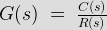
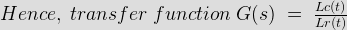
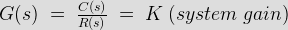
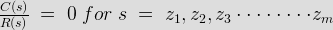

For any control system there exists a reference input termed as excitation or cause which operates through a transfer operation termed as transfer function and produces an effect resulting in controlled output or response. Thus the cause and effect relationship between the output and input is related to each other through a transfer function.
Transfer Function
\; g\; =\;\frac{c}{r}")
It is not necessary that the output will be of same category as that of the input. For example – in case of an electrical motor, the input is an electrical quantity and output is a mechanical one. In control system all mathematical functions are converted to their corresponding Laplace transforms. So the transfer function is expressed as a ratio of Laplace transform of input function to Laplace transform of output function.
Laplace Transfer Function
The transfer function can be expressed as,

While doing Laplace transform, while determining transfer function we assume all initial conditions to be zero.

The transfer function of a control system is defined as the ration of the Laplace transform of the output variable to Laplace transform of the input variable assuming all initial conditions to be zero.
Procedure for determining the transfer function of a control system are as follows :
1. We form the equations for the system
2. Now we take Laplace transform of the system equations, assuming initial conditions as zero.
3. Specify system output and input
4. Lastly we take the ratio of the Laplace transform of the output and the Laplace transform of the input which is the required transfer function
Methods of obtaining a Transfer function: There are major two ways of obtaining a transfer function for the control system .The ways are –
• Block diagram method : It is not convenient to derive a complete transfer function for a complex control system. Therefore the transfer function of each element of a control system is represented by a block diagram. Block diagram reduction techniques are applied to obtain the desired transfer function.
• Signal Flow graphs : The modified form of a block diagram is a signal flow graph. Block diagram gives a pictorial representation of a control system . Signal flow graph further shortens the representation of a control system.
The transfer function of a system is completely specified in terms of its poles and zeroes and the gain factor. Let us know about the poles and zeroes of a transfer function in brief.

\; =\;\frac{C(s)}{R(s)}\; =\; K \frac{(s\;-\;z_1)(s\;-\;z_2)(s\;-\;z_3)\cdot\cdot\cdot\cdot\cdot\cdot\cdot\cdot (s\;-\;z_m)}{(s\;-\;p_1)(s\;-\;p_2)(s\;-\;p_3)\cdot\cdot\cdot\cdot\cdot\cdot\cdot\cdot (s\;-\;p_n)}\cdot\cdot\cdot\cdot\cdot\cdot\cdot\cdot (i)")
Where, K = system gain,
z1 , z2 , ………………… zm = zero’s of the transfer function
p1 , p2 , ………………… pn = pole’s of the transfer function
Putting the denominator of equation (i) equal to zero we get the poles value of the transfer function. For this the T.F is infinity.
}{R(s)}\; =\; \infty\; for\; s\; =\; p_1, p_2, p_3\cdot\cdot\cdot\cdot\cdot\cdot\cdot\cdot p_n")
Putting the numerator of equation (ii) equal to zero we get the value of zero of the transfer function. For this T.F is equal to zero.

There are two types of transfer functions :-
i) Open loop transfer function( O.L.T.F) : Transfer function of the system without feedback path or loop.
ii) Closed loop transfer function (C.L.T.F) : Transfer function of the system with feedback path or loop.
 by
by